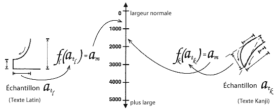

Annexe C : Les notes de mise en œuvre et d'optimisation des polices
Cet annexe est informatif, et non normatif.
- DocLock™
- La technologie DocLock™ de la société Bitstream assure que les ressources TrueDoc PFR ne peuvent être
employées que dans le site auquel celles-ci sont destinées. Une ressource TrueDoc PFR déplacée
vers un site différent, ou référencée par un autre site, ne fonctionnera pas ;
- Signature digitale
- Partie d'une technologie d'administration de confiance, employée pour la certification d'une ressource ;
- Mise en cache des polices
- La mise en cache des polices autorise la copie temporaire d'une police sur le système
de l'utilisateur. Ces copies sont souvent stockées sur un disque dur en même temps que d'autres articles
mis en cache comme, en particulier, les images pour un agent utilisateur ;
- Le dessin d'une police
- Un "indicateur" qui se rapporte au dessin particulier d'une police, excluant la taille de celle-ci ;
- Correspondance de police
- La correspondance de police est un processus de sélection d'une police similaire, fondé
sur un ou plusieurs des attributs d'une police primaire. Quelques attributs courants : serif, sans-serif,
graisse, hauteur de capitale, hauteur-x, espacement, langue et apparence. La correspondance de police est liée
à l'algorithme utilisé et à l'échantillon des polices candidates ;
- Sous-ensemble de représentation des glyphes
- Le sous-ensemble de représentation des glyphes correspond au processus par lequel on retire
les représentations de glyphes non souhaitées (l'information sur leurs mesures environnantes et
leur crénage compris) d'une police primaire pour produire un sous-ensemble propre à un document ou
un jeu de documents. C'est une opération particulièrement profitable pour les documents avec des
écritures idéographiques, le complément des glyphes de la police de base pouvant être
très important. La production d'un sous-ensemble de représentations des glyphes pour les documents employant des
écritures avec des ligatures, comme pour l'arabe, est difficile si l'on ne connaît pas les règles
de formation des ligatures du système d'affichage final ;
- Intellifont
- La technologie Intellifont, développée par la société Agfa, est le format natif pour les imprimantes
de la société Hewlett-Packard et d'autres, celles-ci s'appuyant sur le langage PCL5. C'est également le format natif
des ordinateurs de la marque Amiga ;
- Infinifont
- Une technique de synthèse de police qui, à partir d'un nombre Panose-1 (et, en option, des données
supplémentaires décrivant la police), peut générer une copie de la police sans extrapolation
des contours d'une police de référence ou sans interpolation entre deux contours, ou plus
(voir [INFINIFONT]) ;
- Italique
- Une classe de formes de lettres pour les écritures latines, ces formes étant
plus cursives que celle des lettres romanes, mais moins que celles des lettres manuscrites. Souvent, on dessine une paire
de polices pour une utilisation conjointe, une police serif romane et une police italique.
On emploie d'autres termes pour décrire cette classe, comme le terme cursive (kursiv pour les
écritures cyrilliques). Pour une police sans serif, la police appariée consiste souvent en une variante
inclinée ou oblique plutôt que de provenir d'une classe différente.
 [D]
[D]
- Crénage
- Une modification de l'espacement entre les représentations de glyphes donnés, qui
semblerait autrement trop proches ou trop éloignés les uns des autres, pour obtenir un certain
équilibre typographique ;
 [D]
[D]
- Police Multiple Master
- Une police Multiple Master contient deux polices primaires qui sont traitées par un logiciel de
rendu particulier pour donner une interpolation résultante. La société Adobe Systems fournit un mécanisme
paramétrable pour contrôler le résultat ou la police interpolée résultante.
Ces paramètres décrivant généralement les caractéristiques d'une police originale
on parle du résultat "multiple master" comme de la "police synthétisée" ;
- OpenType
- OpenType est un élargissement du format de police TrueType qui contient des informations supplémentaires,
celles-ci augmentant les capacités des polices pour une typographie internationale de qualité.
Avec OpenType, on peut associer un seul caractère avec plusieurs représentations de glyphes et, à l'inverse,
associer une combinaison de caractères avec une seule représentation de glyphe (la formation d'une ligature).
Ce format inclus une information bidimensionnelle qui autorise des fonctions de positionnement et de liaison des glyphes
complexes. Les formats TrueType et OpenType contiennent une information explicite sur l'écriture et la langue,
de ce fait, une application de traitement de texte peut s'adapter en conséquence
(voir [OPENTYPE]) ;
- Police de serveur
- Une police de serveur est une ressource de polices installée sur un serveur Web, cette ressource
étant référencée par la définition d'une PoliceWeb. L'agent utilisateur peut
employer celle-ci pour le rendu d'une page ;
- Speedo
- La technologie de police Speedo, développée par la société Bitstream,
est le format de police natif des ordinateurs de marque Atari ST et Falcon. Celle-ci est également
employée par certaines plates-formes utilisant le système X Window ;
- TrueDoc
- La technologie TrueDoc, développée par la société Bitstream, pour la création,
le transport et l'illustration d'objets de police variables et indépendants de la plate-forme sur le Web.
Ces objets sont créés par l'enregistreur de forme de caractère TrueDoc (Character Shape Recorder)
et sont rendus par le lecteur de forme du caractère TrueDoc (Charachter Shape Player). Cette technologie est
prévue pour l'affichage et l'impression sur le Web ;
- TrueDoc Portable Font Resource
- Un objet de police TrueDoc Portable Font Resource (ou PFR), indépendant de la plate-forme,
est produit par un enregistreur de forme de caractère. On peut y mettre en entrée des polices TrueType
ou Type 1 de toute provenance, que ce soit sur Windows, Macintosh ou Unix. Les ressources produites offrent de bons
ratios de compression, sont indépendantes de la plate-forme et, comme elles ne sont pas dans un format natif
(TrueType ou Type 1), ne peuvent facilement être installées sur un système ;
- TrueType
- Le format de police TrueType , développé par la société Apple puis licencié à la société Microsoft.
C'est le format de police système natif pour les plates-formes Windows et Macintosh. Celui-ci contient un jeu de tables
hiérarchique et des représentations de glyphes. Les caractères peuvent être repérés
un à un et selon leur taille exprimées en points, ce qui produit d'excellents résultats pour les
résolutions des écrans. Bien que les polices TrueType soient peu différentes entre Windows
et Macintosh, celles-ci peuvent l'être suffisamment et empêcher leur usage commun.
- TrueType Collection
- Le format TrueType Collection (ou TTC), une extension du format TrueType, inclut des
tables permettant la réunion de plusieurs polices TrueType dans un seul fichier de police TrueType. Les fichiers
de ce type sont encore relativement peu courants ;
- Polices TrueType GX
- Les polices TrueType GX contiennent des rajouts au format TrueType standard qui permettent certaines
variations, de façon similaire aux polices Multiple Master. Celles-ci peuvent varier selon divers paramètres
tels la graisse, la hauteur et l'inclinaison. On peut définir ces paramètres pour obtenir pratiquement
tous les effets. Le format TrueType GX peut également comporter d'autres représentations de glyphes de
substitution pour les ligatures, les formes contextuelles, les fractions, etc. À ce jour, ce format n'est
disponible que pour la plate-forme Macintosh (voir [TRUETYPEGX]) ;
- Police Type 1
- Les polices Type 1, développées par la société Adobe Systems, ont été
l'un des premiers formats variables disponibles. Celles-ci contiennent généralement 228 caractères
dont les représentations de glyphes sont décrites par des courbes de Bézier du troisième ordre.
Les formats sont similaires pour les plates-formes Macintosh, Windows et Unix mais néanmoins séparés ;
La société Adobe fournit un logiciel de gestion des polices, Adobe Type Manager, pour ces trois plates-formes.
Le format Type1c est la forme de stockage avec une compression non destructive la plus récente pour les représentations de glyphes du Type 1 ;
- Attache par adresse URI
- Un processus pour lier une ressource de police donnée à un certain site Web, ceci par l'incorporation
d'une adresse URI cryptée ou d'un certificat digital d'utilisation dans la ressource même de police.
De nombreux formats de police différents sont employés sur diverses plates-formes. Pour la sélection
d'un format de police adéquat, on utilise une négociation de contenu transparente
(voir [NEGOT]).
On peut toujours savoir quand une police n'est plus référencée, car l'adresse URI se trouve dans la
description de la police. Une implémentation donnée saura lesquels des formats de polices téléchargeables
lui sont connus et évitera ainsi, avec ces indices, de télécharger un format inexploitable.
 [D]
[D]
Le système d'exploitation Windows95 utilise les informations des rubriques Famille, Style Serif et Proportion
pour la sélection et la correspondance d'une police.
On donne ci-après la signification des dix chiffres avec leurs valeurs admises (entre parenthèses),
pour le cas le plus courant où le chiffre pour la "famille" est 2 - texte et affichage (quand le premier
chiffre a une valeur différente, les neufs chiffres restants prennent un autre sens).
Pour des détails supplémentaires sur Panose-1, voir [PANOSE].
- Famille
-
- Style des sérifs
- Tous (0)
- Pas de correspondance (1)
- Anse (2)
- Anse obtuse(3)
- Anse carrée (4)
- Anse obtuse carrée (5)
- Carré (6)
- Mince (7)
- Arête (8)
- Exagérée (9)
- Triangulaire (10)
- Normal Sans (11)
- Obtus Sans (12)
- Perpendiculaire Sans (13)
- Évasé (14)
- Arrondi (15)
- Graisse
- Tous (0)
- Pas de correspondance (1)
- Very Light (2)[100]
- Light (3) [200]
- Thin (4) [300]
- Book (5) [400] même chose que pour 'font-weight: normal;' en CSS1
- Medium (6) [500]
- Demi (7) [600]
- Bold (8) [700] même chose que pour 'font-weight: bold;' en CSS1
- Heavy (9) [800]
- Black (10) [900]
- Extra Black / Nord (11) [900] force une correspondance avec l'échelle 100-900 de CSS1
- Proportion
- Tous (0)
- Pas de correspondance (1)
- Ancienne mode (2)
- Moderne (3)
- Largeur égalisée (4)
- Élargie (5)
- Étroite (6)
- Très élargie (7)
- Très étroite (8)
- Monospace (9)
- Contraste
- Tous (0)
- Pas de correspondance (1)
- Aucun (2)
- Très faible (3)
- Faible (4)
- Moyen faible (5)
- Moyen (6)
- Moyen grand (7)
- Grand (8)
- Très grand (9)
- Variation du trait
- Tous (0)
- Pas de correspondance (1)
- Aucune variation (2)
- Graduelle/Diagonale (3)
- Graduelle/Transitionnelle (4)
- Graduelle/Verticale (5)
- Graduelle/Horizontale (6)
- Rapide/Verticale (7)
- Rapide/Horizontale (8)
- Instantanée/Horizontale (9)
- Instantanée/Verticale (10)
- Style des branches
- Tous (0)
- Pas de correspondance (1)
- Branches droites/Horizontal (2)
- Branches droites/Calé (3)
- Branches droites/Vertical (4)
- Branches droites/Serif simple (5)
- Branches droites/Serif double (6)
- Branches non droites/Horizontal (7)
- Branches non droites/Calé (8)
- Branches non droites/Vertical 90)
- Branches non droites/Serif simple (10)
- Branches non droites/Serif double (11)
- Forme de la lettre
-
- Tous (0)
- Pas de correspondance (1)
- Normale/Touchante (2)
- Normale/Équilibrée (3)
- Normale/Encadrée (4)
- Normale/Aplatie (5)
- Normale/Arrondie (6)
- Normale/Décentrée (7)
- Normale/Carrée (8)
- Oblique/Touchante (9)
- Oblique/Équilibrée (10)
- Oblique/Encadrée (11)
- Oblique/Aplatie (12)
- Oblique/Arrondie (13)
- Oblique/Décentrée (14)
- Oblique/Carrée (15)
- Traits du milieu
-
- Tous (0)
- Pas de correspondance (1)
- Standard/Coupé (2)
- Standard/Pointu (3)
- Standard/Serif (4)
- Haut/Coupé (5)
- Haut/Pointu (6)
- Haut/Serif (7)
- Constant/Coupé (8)
- Constant/Pointu (9)
- Constant/Serif (10)
- Bas/Coupé (11)
- Bas/Pointu (12)
- Bas/Serif (13)
- Hauteur-x
-
- Tous (0)
- Pas de correspondance (1)
- Constante/Petite (2)
- Constante/Standard (3)
- Constante/Grande (4)
- Plongeante/Petite (5)
- Plongeante/Standard (6)
- Plongeante/Grande (7)
La spécification Panose-2 (voir [PANOSE2])
offre une classification des polices plus complète et une technologie de correspondance qui ne se limite pas
aux polices latines. Par exemple, on peut comparer les caractéristiques des sérifs d'une police latine
avec les terminaisons des traits d'une police Kanji.

La valeur Panose-2 n'est incorporée à aucun format de police connu, néanmoins on peut la mesurer.
C'est une information qui est contenue dans la police et située dans les bits 'ulUnicodeRange de la table 'OS/2'
(s'ils existent), ceux-ci contenant une représentation du jeu. Cette table est définie dans la spécification
TrueType version corrigée 1.66 de la société Microsoft. En considérant l'information
comme étant un jeu, chacun des éléments correspond avec un ensemble de caractères Unicode 1.1,
la présence d'un élément donné dans le jeu est une indication que la police a un ou
plusieurs glyphes représentés dans cet ensemble. Le jeu comprend 128 éléments décrits plus loin.
L'ordre de leur succession suit en général celui du standard Unicode 1.1. On peut utiliser cette table
pour convertir l'information contenue dans une police TrueType en un descripteur CSS 'unicode-range'.
|
|---|
| Bloc | Adresse | Nom de l'ensemble | Étendue Unicode
|
|---|
|
|---|
| 0 | 1 | Latin de base | U+0-7F
|
| 1 | 2 | Supplément Latin-1 | U+80-FF
|
| 2 | 4 | Latin-1 étendu-A | U+100-17F
|
| 3 | 8 | Latin étendu-B | U+180-24F
|
|
|---|
| 4 | 1 | Extensions IPA | U+250-2AF
|
| 5 | 2 | Lettres modifiant l'espacement | U+2B0-2FF
|
| 6 | 4 | Combinaisons de marques diacritiques | U+300-36F
|
| 7 | 8 | Grec | U+370-3CF
|
|
|---|
| 8 | 1 | Symboles grecs et copte | U+3D0-3EF
|
| 9 | 2 | Cyrillique | U+400-4FF
|
| 10 | 4 | Arménien | U+530-58F
|
| 11 | 8 | Hébreu | U+590-5FF
|
|
|---|
| 12 | 1 | Hébreu étendu-A
Hébreu étendu-B | Quelles étendues ?
|
| 13 | 2 | Arabe | U+600-69F
|
| 14 | 4 | Arabe étendu | U+670-6FF
|
| 15 | 8 | Devanagari | U+900-97F
|
|
|---|
| 16 | 1 | Bengali | U+980-9FF
|
| 17 | 2 | Gurmukhi | U+A00-A7F
|
| 18 | 4 | Gujarati | U+A80-AFF
|
| 19 | 8 | Oriya | U+B00-B7F
|
|
|---|
| 20 | 1 | Tamil | U+B80-BFF
|
| 21 | 2 | Telugu | U+C00-C7F
|
| 22 | 4 | Kannada | U+C80-CFF
|
| 23 | 8 | Malayalam | U+D00-D7F
|
|
|---|
| 24 | 1 | Thai | U+E00-E7F
|
| 25 | 2 | Lao | U+E80-EFF
|
| 26 | 4 | Géorgien | U+10A0-10EF
|
| 27 | 8 | Georgien étendu | U+10F0-10FF ?
|
|
|---|
| 28 | 1 | Hangul Jamo | U+1100-11FF
|
| 29 | 2 | Latin étendu supplémentaire | -
|
| 30 | 4 | Grec étendu | U+1F00-1FFF
|
| 31 | 8 | Ponctuation générale | U+2000-206F
|
|
|---|
| 32 | 1 | Exposants et indices | -
|
| 33 | 2 | Symboles monétaires | U+20A0-20CF
|
| 34 | 4 | Combinaisons de marques pour les symboles | U+20D0-20FF
|
| 35 | 8 | Symboles avec un aspect de lettre | U+2100-214F
|
|
|---|
| 36 | 1 | Formes numériques | U+2150-218F
|
| 37 | 2 | Flêches | U+2190-21FF
|
| 38 | 4 | Opérateurs mathématiques | U+2200-22FF
|
| 39 | 8 | Divers techniques | U+2300-23FF
|
|
|---|
| 40 | 1 | Dessins de contrôle | U+2400-243F
|
| 41 | 2 | Reconnaissance optique des caractères | U+2440-245F
|
| 42 | 4 | Les alphanumériques inclus | U+2460-24FF
|
| 43 | 8 | Dessins de boîtes | U+2500-257F
|
|
|---|
| 44 | 1 | Éléments d'ensemble | U+2580-259F
|
| 45 | 2 | Formes géométriques | U+25A0-25FF
|
| 46 | 4 | Symboles divers | U+2600-26FF
|
| 47 | 8 | Dingbats | U+2700-27BF
|
|
|---|
| 48 | 1 | CJK Symboles et ponctuation | U+3000-303F
|
| 49 | 2 | Hiragana | U+3040-309F
|
| 50 | 4 | Katakana | U+30A0-30FF
|
| 51 | 8 | Bopomofo | U+3100-312F
|
|
|---|
| 52 | 1 | Hangul compatibilité Jamo | U+3130-318F
|
| 53 | 2 | CJK Divers | ?
|
| 54 | 4 | CJK Lettres et mois inclus | U+3200-32FF
|
| 55 | 8 | CJK Compatibilité | U+3300-33FF
|
|
|---|
| 56 | 1 | Hangul | U+AC00-D7FF
|
| 59 | 8 | CJK Idéogrammes unifiés | U+4E00-9FFF
|
|
|---|
| 60 | 1 | Aire d'utilisation privée | U+E000-F8FF
|
| 61 | 2 | CJK idéogrammes de compatibilité | U+F900-FAFF
|
| 62 | 4 | Formes de présentation alphabétique | U+FB00-FB4F
|
| 63 | 8 | Formes-A de présentation arabe | U+FB50-FDFF
|
|
|---|
| 64 | 1 | Combinaisons de demi-marques | U+FE20-FE2F
|
| 65 | 2 | CJK Formes de compatibilité | U+FE30-FE4F
|
| 66 | 4 | Petites variantes de forme | U+FE50-FE6F
|
| 67 | 8 | Formes-B de présentation arabe | U+FE70-FEFF
|
|
|---|
| 68 | 1 | Formes de demi-largeur et de largeur entière | U+FF00-FFEF
|
| 69 | 2 | Spéciaux | U+FFF0-FFFD
|
Les outils de création devraient permettre aux auteurs l'ajout et l'édition des descripteurs de police.
Dans certains cas, ces outils peuvent fournir une aide pour l'examen des polices installées localement et
pour la génération des descripteurs de police mentionnés dans la feuille de style. Cette fonction
peut aussi être accomplie par des outils produisant des sous-ensembles de polices, ou des conversions de police,
en vue de leur chargement dynamique.
Cette table suggère, pour les formats de police courants, où trouver ces informations :
| Descripteur | Type 1 | TrueType et OpenType | TrueType GX [TRUETYPEGX] |
| 'ascent' | dans 'Ascender' dans le fichier AFM/PFM | dans 'Ascender' dans la table 'hhea' ou (de préférence) dans 'sTypoAscender' dans la table 'OS/2' | dans 'horizontalBefore' dans la table 'fmtx'
|
| 'baseline' | | | dans la table bsln, voir note
|
| 'bbox' | dans le dictionnaire de police FontBBox | dans les entrées 'xMin', 'xMax', 'yMin' et 'yMax' de la table 'head' |
|
| 'cap-height' | dans CapHeight dans le fichier AFM/PFM | |
|
| 'descent' | dans 'Descender' dans le fichier AFM/PFM | |
|
| 'mathline' | | | dans la table bsln
|
| 'font-family' | dans FamilyName, le dictionnaire d'information de police | dans la table name |
|
| 'stemh' | dans StdHW, le dictionnaire privé du fichier AFM/PFM | |
|
| 'stemv' | dans /StdVW, le dictionnaire privé | dans la table cvt |
|
| 'topline' | | | dans la table bsln
|
| 'unicode-range' | dans le fichier cmap | dans la table OS/2, voir l'annexe C |
|
| 'units-per-em' | dans FontMatrix, le dictionnaire de police | dans unitsPerEm, dans la table head |
|
| 'widths' | | dans la table hmtx |
|
- Dans la table bsln, on peut utiliser la ligne de base idéographique centrale
pour des successions majoritaires de caractères idéographiques, la ligne de base idéographique inférieure
convenant mieux à un jet de caractères majoritairement latins, grecs ou cyrilliques.